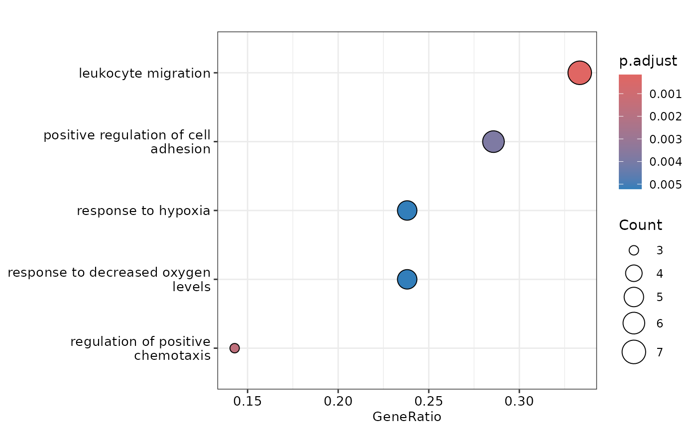
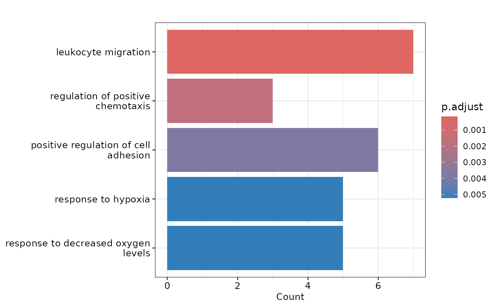
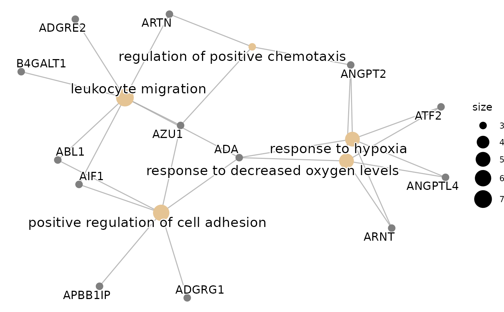

plot_ora() produces useful plots to visualize the results of the
over-representation analysis.
Arguments
- enrichment
The results of the over-representation analysis.
- protein_list
A character vector containing the protein names. It should be the same as the one used in
do_ora().- pval_lim
The p-value threshold to consider a term as significant.
- ncateg
The number of categories to show in the plots.
- fontsize
The font size for the plots.
Examples
# Perform Differential Expression Analysis
control = c("BRC", "CLL", "CRC", "CVX", "ENDC", "GLIOM", "LUNGC", "LYMPH", "MYEL", "OVC", "PRC")
de_res <- do_limma(example_data,
example_metadata,
case = "AML",
control = control,
wide = FALSE)
#> Comparing AML with BRC, CLL, CRC, CVX, ENDC, GLIOM, LUNGC, LYMPH, MYEL, OVC, PRC.
# Extract the up-regulated proteins for AML
sig_up_proteins_aml <- de_res$de_results |>
dplyr::filter(sig == "significant up") |>
dplyr::pull(Assay)
# Perform ORA with GO database
enrichment <- do_ora(sig_up_proteins_aml, database = "GO")
#> No background provided. When working with Olink data it is recommended to use background.
#> 'select()' returned 1:1 mapping between keys and columns
# Plot the results
plot_ora(enrichment, sig_up_proteins_aml, pval_lim = 0.05, ncateg = 5)
#> 'select()' returned 1:1 mapping between keys and columns
#> $dotplot

#>
#> $barplot

#>
#> $goplot
#> Warning: ggrepel: 4 unlabeled data points (too many overlaps). Consider increasing max.overlaps

#>
#> $cnetplot
 #>
#>